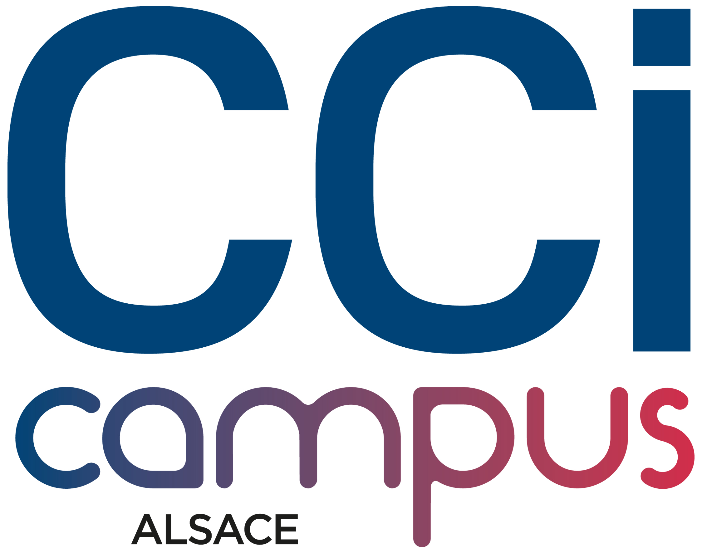

|
Profil |

|
|---|
Je m’appelle Julien GOMES, je suis né le 7 mars 2001 à Saverne et j’ai à ce jour 21 ans. Je réside actuellement à Phalsbourg, une petite ville en Lorraine.
Je suis en formation BTS SIO en alternance à la CCI Campus à Strasbourg et salarié dans l’entreprise KUHN à Saverne.

Cette formation me permet d’étudier l’informatique (plus particulièrement le réseau) et grâce à l’alternance, je peux travailler dans le milieu professionnel dans le même domaine.